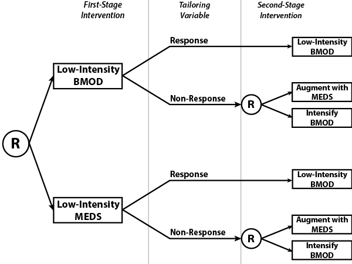

<!-- Modal -->
<div class="modal hide fade" id="exampleBmodal" tabindex="-1" data-width="760" aria-hidden="true">
<!--   <div class="modal-dialog"> -->
    <div class="modal-content">
      <div class="modal-header">
        <button type="button" class="close" data-dismiss="modal"><span aria-hidden="true">&times;</span></button>
        <h4 class="modal-title" id="exampleBmodalLabel">Example of SMART using Design B</h4>
      </div>
      <div class="modal-body">
	  <p>
		We consider a trial on adaptive pharmacological and behavioral treatments for children with ADHD (W. Pelham, P.I.). 
	  </p>
	  <h4> Motivation </h4>
	  <p>
		A number of efficacious pharmacological and behavioral interventions are available for the treatment of ADHD.
		However, it is unclear whether the first-stage treatment should be pharmacological or behavioral. 
	  </p>
	  <h4> Trial Components </h4>
		There are four treatments under study. They are
		<ol>
			<li> Low- and high-dose methylphenidate (a psychostimulant) (MEDS)
			<li> Low- and high-intensity behavioral modification (BMOD)
		</ol>
			The tailoring variable used were scores on the Impairment Rating Scale (IRS) and an individualized test of target 
			behaviors (ITB); both are well-known instruments which assess response to treatment.
	  <div>
		 </img>
	  </div> 
	  <h4> Embdedded Adaptive Interventions </h4>
			There are four adaptive interventions embedded in this design, as pictured above. They are
			<ol>
				<li> "Give low-intensity BMOD. If the child responds to treatment, continue providing low-intensity BMOD. Otherwise, if the child does not respond, 
				augment low-intensity BMOD with MEDS."
				<li> "Give low-intensity BMOD. If the child responds to treatment, continue providing low-intensity BMOD. Otherwise, if the child does not respond, 
				switch to high-intensity BMOD."
				<li> "Give low-dose MEDS. If the child responds to treatment, continue providing low-dose MEDS. Otherwise, if the child does not respond,
				augment low-dose MEDS with BMOD."
				<li> "Give low-dose MEDS. If the child responds to treatment, continue providing low-dose MEDS. Otherwise, if the child does not respond,
				switch to high-dose MEDS."
			</ol>
		<h4>Outcome Measures</h4>
			Outcome measures include time-varying ratings of child behavior (from parents and teachers) as well as final IRS and ITB scores after 8 months.
	  <h4>References</h4>
		<ol>
			<li> Lei, H., Nahum-Shani, I., Lynch, K., Oslin, D., and Murphy, S. A. (2012), "A 'SMART' Design for Building Individualized
				Treatment Sequences," <em>Annu. Rev. Clin. Psychol.</em>, 8, 21-48.
			<li> Pelham, W. E., & Fabiano, G.A. (2008), "Evidence-based psychosocial treatment for ADHD: An update", <em>Journal of Clinical 
			Child and Adolescent Psychology</em>, 31, 184-214.
		</ol>
      <div class="modal-footer">
<!-- 		<a type="button" class="btn btn-primary" href="www/pdf/exampleDesignB.pdf" target="_blank">Print</a>
 -->        <button type="button" class="btn btn-default" data-dismiss="modal">Close</button>
      </div>
    </div>
 </div>
</div>
<!-- /.modal -->